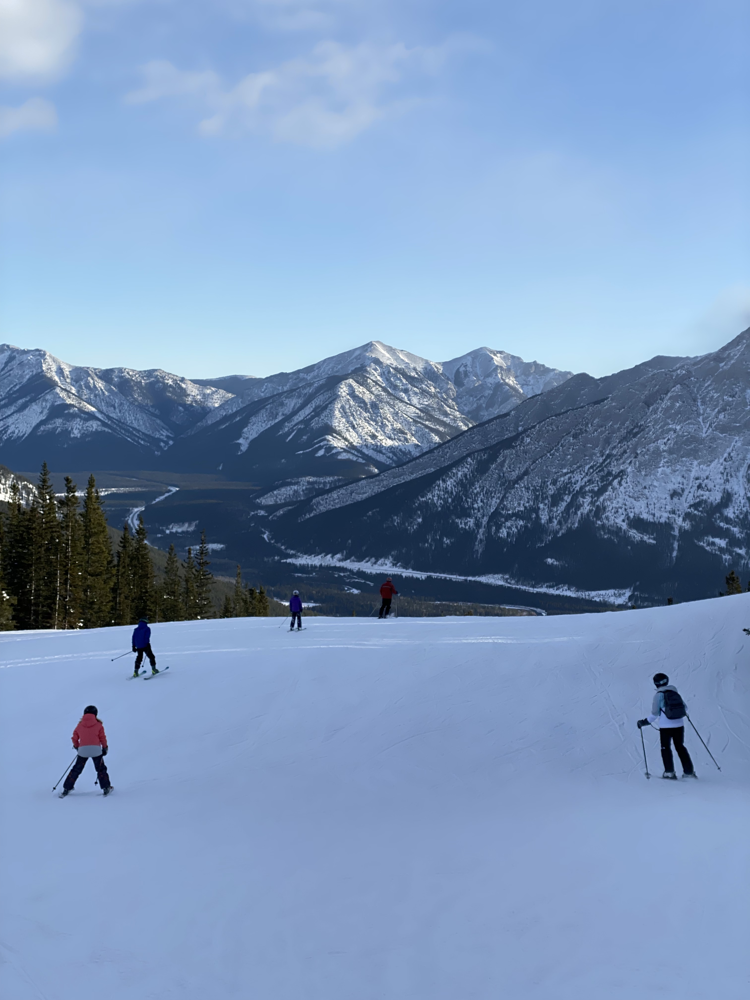
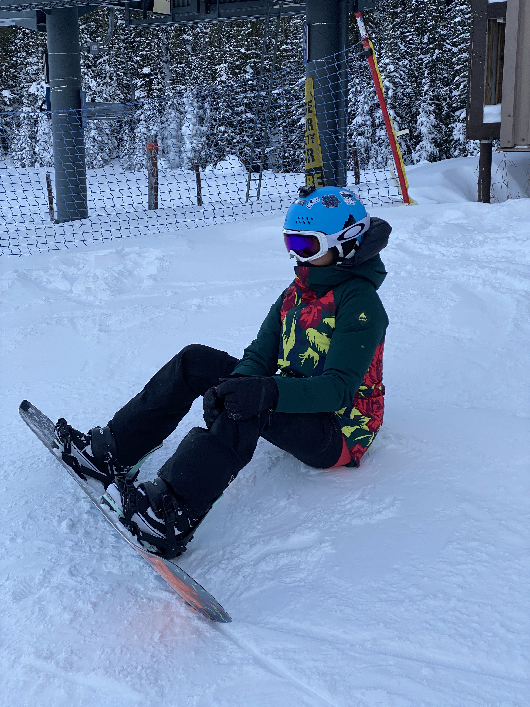
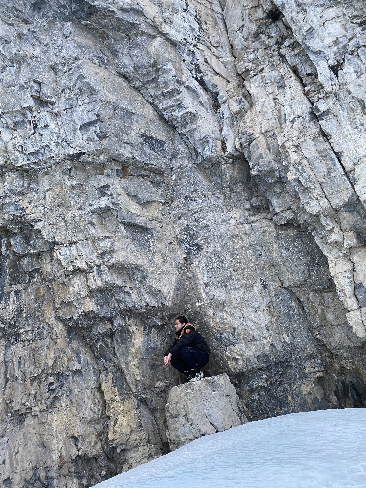
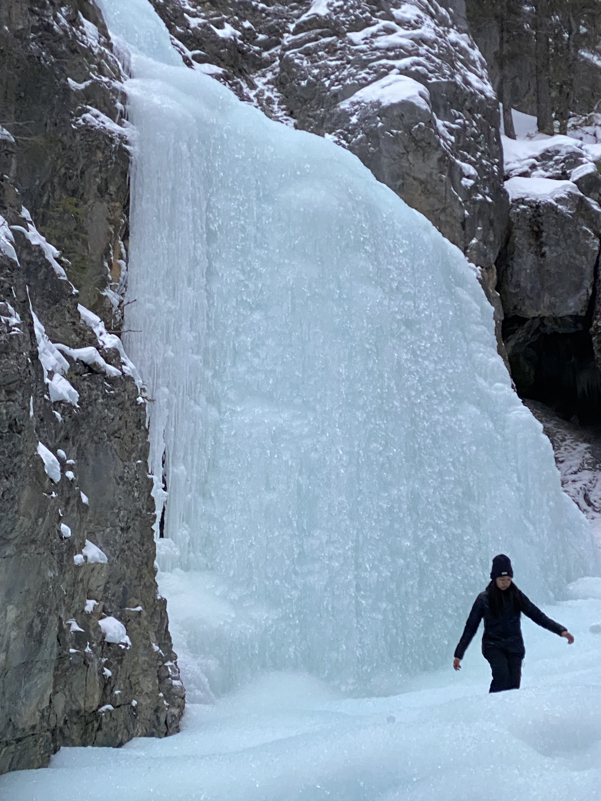
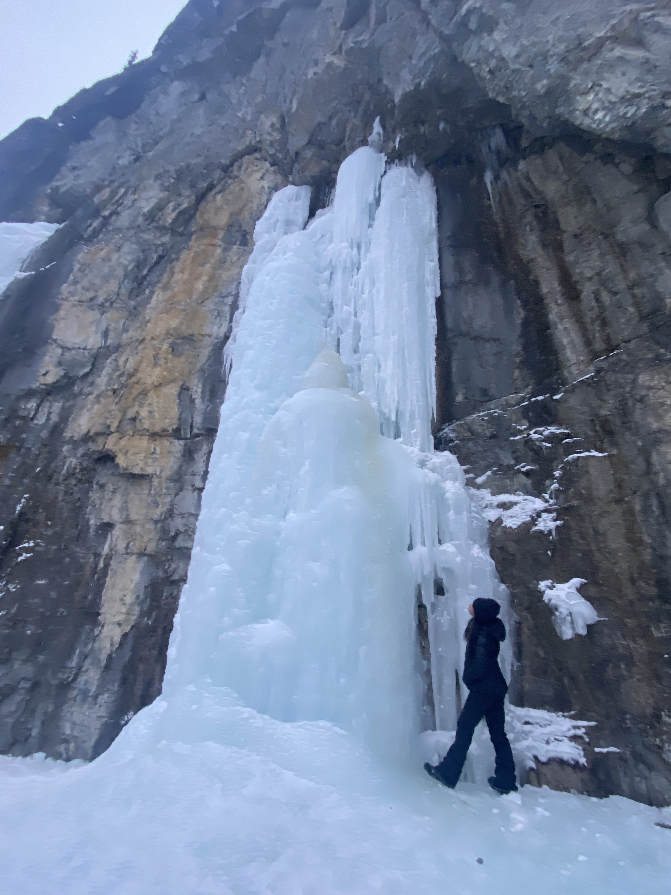
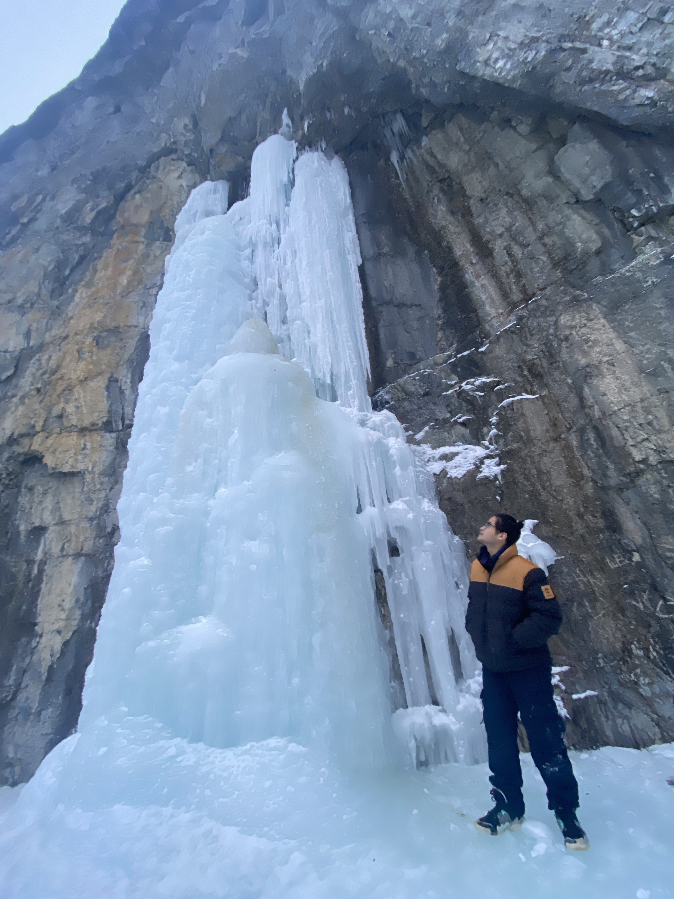
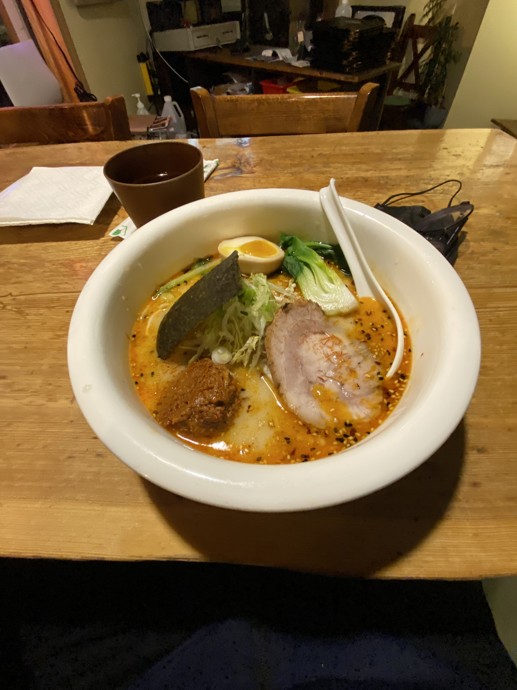
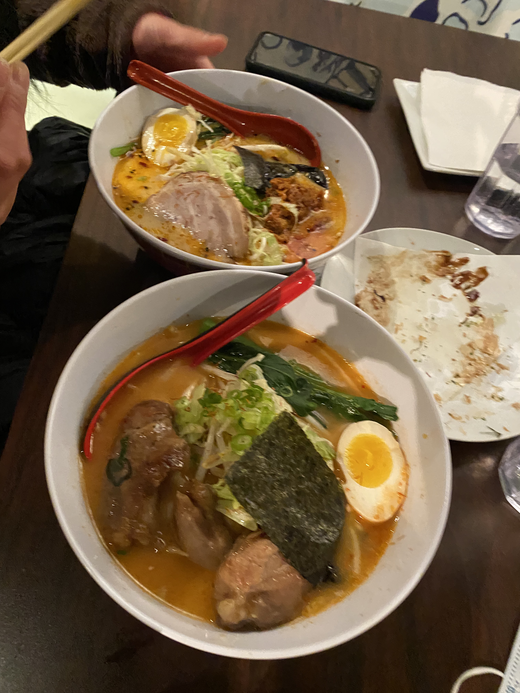

Jan 02 2022 - Nakiska & Grotto Canyon
It’s crazy to look back at these photos and realize we had been dating for less than a week. We weren't even DATING dating yet! But there was this undeniable pull between us. We were both fairly new to the whole skiing and snowboarding scene, so we decided to head out to Nakiska just to chill, figure things out, and see if we could survive a mountain together.


After surviving the slopes, we weren't ready for the day to end, so we headed over to hike Grotto Canyon. We spent the afternoon wandering through the gorge, slipping around on the ice, and just enjoying each other's company. We stumbled upon these massive, beautiful frozen waterfalls that felt like they were straight out of a fairy tale.





Of course, after a long day in the freezing cold, there was only one logical way to warm up: Ramen. We found a spot and completely devoured our bowls.


This trip was pure magic, and it set the tone for everything that came next. Little did we know that just the very next weekend, we'd be sitting in my car back in Edmonton, keeping the engine running just to stay warm while watching Arcane, and me dropping I love you and sharing our first kiss together.
It wouldn't be long after these early adventures that we realized living on opposite ends of Edmonton was a nightmare. I was starting a brand new job on January 5th, and my place in Albany was just too far of a commute. So, on January 4th, I packed a bag and officially stayed the night at her place in Capilano. What was supposed to be a practical sleepover to make it to work on time quickly turned into us never wanting to be apart. We took the leap, moved in together permanently, and the rest is history. This day in the ice and snow was just the beautiful beginning.